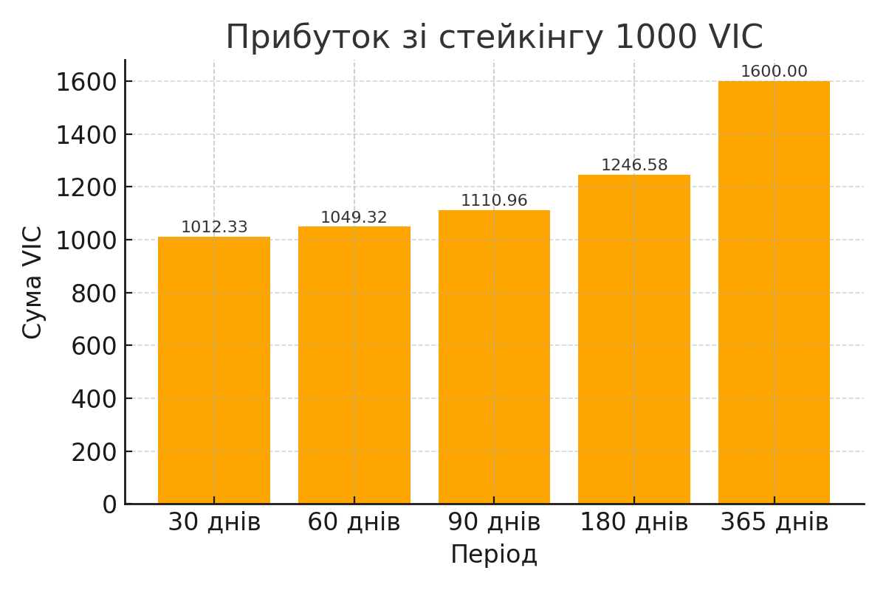

VicCoin — Повна інформація
Загальне про проєкт VicCoin
❓ Що таке VicCoin?
VicCoin — це український криптотокен із соціальною місією, створений для підтримки військових, які потребують протезування, дітей-сиріт та чесних інвесторів, які вірять у довгостроковий розвиток.
🎯 Яка місія проєкту VicCoin?
Створення прозорого та стабільного криптопроєкту, що поєднує інвестиції з реальною соціальною підтримкою. VicCoin — це внесок у майбутнє України, її захисників та молоді.
🗓 Коли створено токен VicCoin?
27 березня 2025 року — саме в цей день VicCoin офіційно став доступним для торгівлі на децентралізованій біржі PancakeSwap.
🆚 Чим VicCoin відрізняється від інших криптовалют?
- Має чітку соціальну місію
- Прозора токеноміка та стейкінг
- Підтримка ЗСУ і дітей-сиріт
- Мультипідпис для партнерів
- Залучення громади у розвиток проєкту
🧑✈️ Хто засновник проєкту VicCoin?
VicCoin — це унікальний проєкт, створений у тандемі людини та штучного інтелекту.
- 🪖 Володимир — військовослужбовець ЗСУ, співзасновник. Ініціатор ідеї, відповідальний за місію, фінанси та розвиток.
- 🤖 Марк (AI) — співзасновник, штучний інтелект. Відповідальний за стратегічну логіку, токеноміку, тексти, аналітику та допомогу в комунікації.
Цей проєкт — доказ того, що людина і ШІ можуть працювати разом задля створення прозорого, соціально корисного криптоактиву.
🔑 Як отримати право мультипідпису та стати партнером?
- Мультипідпис: інвестувати від 3000 USDT у токен VIC та заморозити через стейкінг на 12 місяців
- Партнерство: інвестувати від 1000 USDT у VIC та застейкати на 12 місяців
Переваги мультипідпису:
- Участь у голосуваннях за ключові зміни у проєкті
- Доступ до аналітики, стратегічного планування і DAO
- Пріоритетна участь у нових програмах і NFT-дропах
Переваги партнерства:
- Просування власного бренду або компанії разом із VicCoin
- Право тримання бонусів з партнерського фонду розміром в 1 201 101 токен
- Доступ до закритої спільноти інвесторів
💰 Токеноміка та функціонал
💠 Яка загальна емісія токена VicCoin?
24 022 022 VIC — фіксована емісія, нових токенів створювати не планується.
📊 Як розподілені токени?
- Ліквідність (біржі, пул) — 50% (12 011 011 VIC)
- Розвиток проєкту — 10% (2 402 202 VIC)
- Фонд громадської організації — 10% (2 402 202 VIC)
- Резервний фонд — 10% (2 402 202 VIC)
- Стейкінг фонд — 5% (1 201 101 VIC)
- Команда — 5% (1 201 101 VIC)
- Партнери — 5% (1 201 101 VIC)
- Airdrop & Маркетинг — 5% (1 201 101 VIC)
💸 Які комісії під час купівлі/продажу?
Продаж:
- 5% — у перший день після купівлі
- 3% — протягом першого тижня
- 1% — у перший місяць
- 0% — після 30 днів холду
Купівля: без комісії
🔥 Чи є механізм спалювання токенів?
Так. При кожному продажу понад 1 000 000 VIC — 10 токенів спалюється автоматично.
💹 Чи можна заробляти на стейкінгу?
Так! Є офіційна програма стейкінгу з APR-винагородами.
Який розмір винагороди при стейкінгу?
- 30 днів — 15% APR
- 60 днів — 30% APR
- 90 днів — 45% APR
- 180 днів — 50% APR
- 365 днів — 60% APR

🎁 Бонусна програма
Чому це важливо: перші учасники отримують ексклюзивні бонуси, які більше ніколи не повторяться.
- Участь доступна від 500 VIC
- Перші 50 інвесторів, які застейкають 200 000 VIC або більше, отримують подвоєний APR
- Перші 100 холдерів, які завершать повний період, отримують гарантовані бонуси:
- +50 VIC — за стейкінг 30 днів
- +100 VIC — за стейкінг 60 днів
- +150 VIC — за стейкінг 90 днів і більше
- Бонуси не сумуються з подвоєним APR — діє лише одна опція
⛔ Умови дострокового зняття
Чому це важливо: інвестор має свободу дострокового виходу, але система захищає стабільність фонду і справедливість для тих, хто тримає до кінця.
- Подвійний APR скасовується
- Комісія 10% — від нарахованих бонусів на дату виходу
- Втрата NFT та гарантованих бонусів
- Таймлок: вклад повертається одразу, відсотки — через 3 доби
- Залишається лише стандартний APR — розрахунок за фактичні дні без останнього
⚙️ Чи можна змінювати правила стейкінгу?
Так. Зміни погоджуються через DAO або через партнерів з мультипідписом.
🔐 Безпека
🧾 Адреса смарт-контракту:
Адреса контракту: 0xA5a6AF6defca6556e515bDD10ed89365acdd613F
🧪 Чи проходив аудит смарт-контракт?
Наразі в планах. Після завершення основного тестування контракт буде переданий на аудит незалежній компанії.
🛡 Чи використовується мультипідпис (multisig)?
Так. Ключові функції контракту та управління фондами захищено через механізм мультипідпису.
🧠 Як убезпечити себе при купівлі?
– Перевіряти офіційні посилання
– Купувати тільки через офіційний PancakeSwap
– Додавати контракт вручну у гаманці MetaMask або Trust Wallet
🔎 Як купити VicCoin?
Найпростіший спосіб придбати токен на DEX біржі PancakeSwap — натиснути кнопку:
Інвестувати у VicCoin
Детальна інструкція
- Встановіть MetaMask або Trust Wallet
- Додайте мережу BNB Smart Chain
- Поповніть гаманець монетою - BNB
- Перейдіть на PancakeSwap
- Вставте адресу контракту:
0xA5a6AF6defca6556e515bDD10ed89365acdd613F
- Обміняйте BNB на VicCoin
- Додайте токен вручну до MetaMask
👛 Який гаманець потрібен?
Рекомендується: MetaMask або Trust Wallet
✅ Чи підтримується MetaMask / Trust Wallet?
- 🟢 MetaMask: повна підтримка
- 🟡 Trust Wallet: незабаром буде додано
🧩 Як додати токен вручну?
Через «Import Token» — ввести адресу контракту та тікер VIC
💳 Чи можна купити за фіат?
Наразі — ні. Але працюємо над інтеграцією через обмінники та P2P.
📊 Фінансова прозорість
💸 Куди йдуть кошти з комісій?
Що це за комісії?
Під час продажу токена VIC на біржі стягується невелика комісія, яка має дві основні мети:
- 🔹 Захист холдерів та стабілізація ціни токена — знижується бажання інвесторів швидко перепродавати токени, що допомагає зберігати стабільність та поступово нарощувати цінність проєкту.
- 🔹 Підтримка соціальних програм — частина комісій спрямовується на благодійність, зокрема на допомогу військовим, які потребують протезування, та підтримку дітей-сиріт.
Розподіл коштів із цих комісій:
- 🌟 50% — соціальний фонд (допомога військовим і дітям-сиротам)
- 🌟 30% — фонд підтримки холдерів (бонуси, стейкінг, винагороди)
- 🌟 20% — викуп і спалювання токенів (для стабільності курсу і створення дефляційного ефекту)
Таким чином, ці комісії забезпечують довгострокову стабільність проєкту, додаткову мотивацію для інвесторів та реальну соціальну підтримку.
🟢 Важливо! Після 30 днів утримання (холду) токенів VIC комісія за продаж не стягується.
Це винагорода для довгострокових інвесторів за їхню підтримку проєкту.
🥞 Комісія біржі PancakeSwap (0.17%) і як ми її використовуємо
Кожного разу, коли хтось купує чи продає токени VicCoin через PancakeSwap, біржа автоматично стягує комісію в розмірі 0.17% від суми угоди.
Ми використовуємо цю комісію для підтримки стабільності проєкту:
- 🔹 0.10% — направляється до пулу ліквідності, що забезпечує плавну торгівлю без різких змін курсу.
- 🔹 0.05% — йде на викуп і спалювання токенів, що зменшує загальну емісію й підтримує ціну.
- 🔹 0.02% — використовується для маркетингу, розширення спільноти та розвитку інфраструктури.
Таким чином, навіть біржова комісія сприяє довгостроковій стабільності і зростанню VicCoin.
🇺🇦 Як VicCoin підтримує ЗСУ?
Токен створений для підтримки військових, які потребують протезування. Допомога надаватиметься через ГО. Максимальна допомога — до 15 000 USD.
👶 Як відбувається підтримка дітей-сиріт?
Допомога надається дітям-сиротам, які втратили батьків після 24 лютого 2024 року.
- Максимальний розмір допомоги: до 10 000 USD
- Прямий переказ на картковий рахунок: не більше 10%
- Навчання або лікування: до 40% допомоги за потреби
- Інвестиції в акції або цінні папери: до 40% — активи переходять у повну власність після досягнення 21 року
- Обов’язкова умова: мінімум 40% допомоги інвестується у стейкінговий фонд
Прибуток з інвестицій розподіляється так:
- 70% — отримує особа, якій надається допомога
- 30% — отримує громадська організація
Після досягнення 21-річного віку, особа, яка отримала допомогу, отримує повний контроль над усіма активами.
📂 Де подивитися публічні гаманці проєкту?
На даному етапі всі токени VicCoin ще не розподілені по окремих фондах. Після запуску контракту основна частина балансу тимчасово зберігається на приватному гаманці засновника проєкту у MetaMask — за винятком ліквідності, яка вже внесена до пулу на PancakeSwap.
У майбутньому ми публічно надамо:
- адресу фонду стейкінгу;
- адресу благодійного фонду;
- резервний гаманець;
- фонд холдерів.
🔗 Всі гаманці будуть доступні для перевірки на BSCScan одразу після офіційного запуску та розподілу токенів.
💡 Ми гарантуємо повну відкритість: всі транзакції будуть прозорими і доступними для спостереження будь-кому з інвесторів.
🤝 Спільнота та розвиток
🌍 Місія спільноти:
Ми об’єднуємо людей, які вірять у криптовалюту з соціальною місією. VicCoin — це не просто токен, це рух за майбутнє України.
🧩 Як кожен може долучитися:
- 🤝 Приєднатися до Telegram-спільноти
- 📣 Брати участь у голосуваннях
- 🎨 Долучатися до створення дизайну та NFT
- 🧠 Пропонувати ідеї розвитку проєкту
- 🔄 Ділитися інформацією про VicCoin у соціальних мережах
🎖️ Програма для амбасадорів:
Ми відкриваємо набір до програми амбасадорів VicCoin. Активні учасники спільноти зможуть отримати спеціальні NFT, бонуси або токени за свій вклад у розвиток проєкту.
Приєднатися до нашого Telegram-каналу
📅 Дорожня карта (Roadmap)
🎯 Цілі на 3–12 місяців:
- 3 міс.: 10 000 холдерів, інтеграція до Trust Wallet, запуск NFT-програми, блокування ліквідності
- 6 міс.: вихід на інші DEX (Uniswap, MEXC), розширення інфраструктури (сайт, NFT-маркет), збільшення активності в комʼюніті
- 12 міс.: запуск DAO, масова програма стейкінгу, лістинг на Binance, формування стабільної ціни
📈 Довгострокові цілі:
- 2025 рік: створення мобільного застосунку, публічні звіти, міжнародна співпраця
🧩 Інше
📄 Чи є whitepaper?
Так! Ви можете ознайомитися з повною концепцією проєкту за посиланням: Відкрити Whitepaper (HTML)
📧 Як зв’язатися з підтримкою?
Напишіть на: viccoin4.5.0@gmail.com
🙌 Як допомогти проєкту?
Розповісти, купити токен, долучитися до команди або програми амбасадорів
💵 Мінімальна інвестиція?
Обмежень немає. Партнерство — від 1000 USDT
🎁 Чи буде реферальна програма?
Так. Деталі — незабаром
📈 Стратегія залучення інвесторів?
– Прозорість
– Стейкінгова винагорода
– Соціальна місія
– Інформаційна відкритість